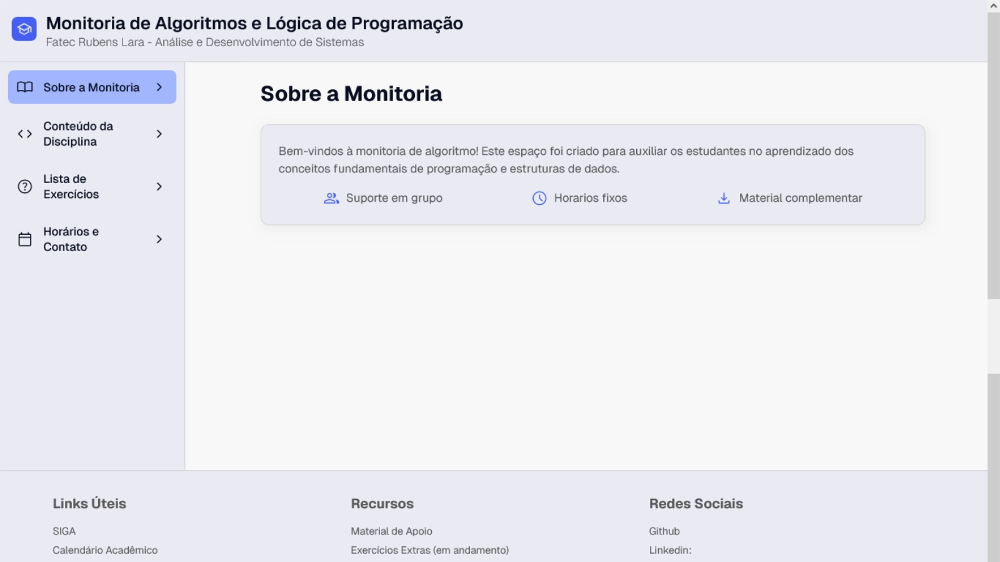
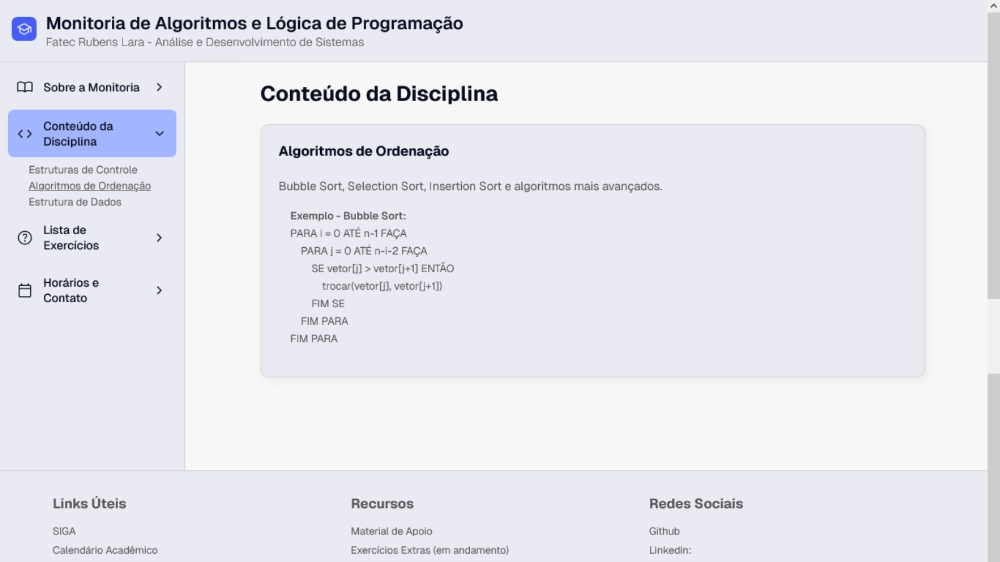
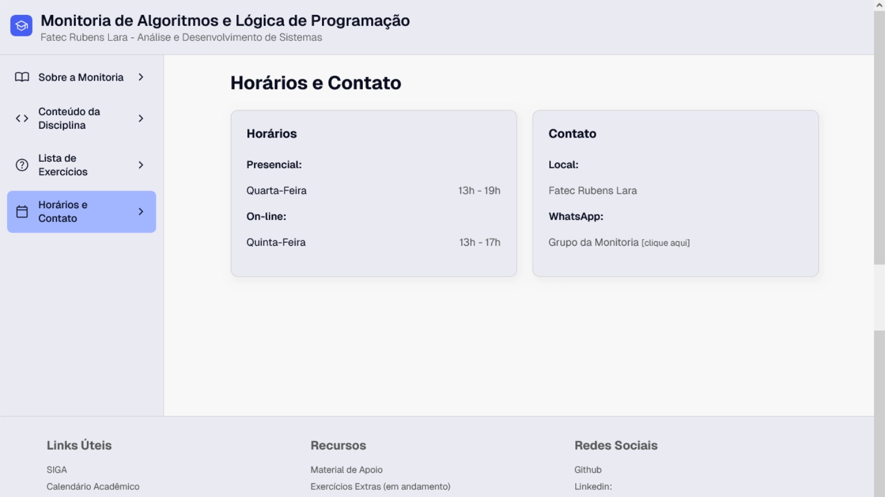
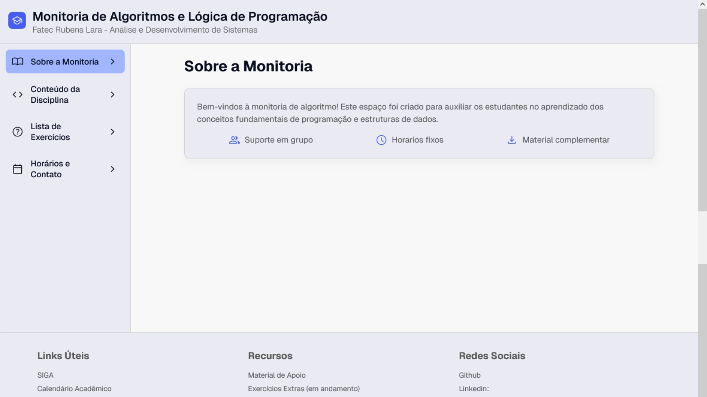
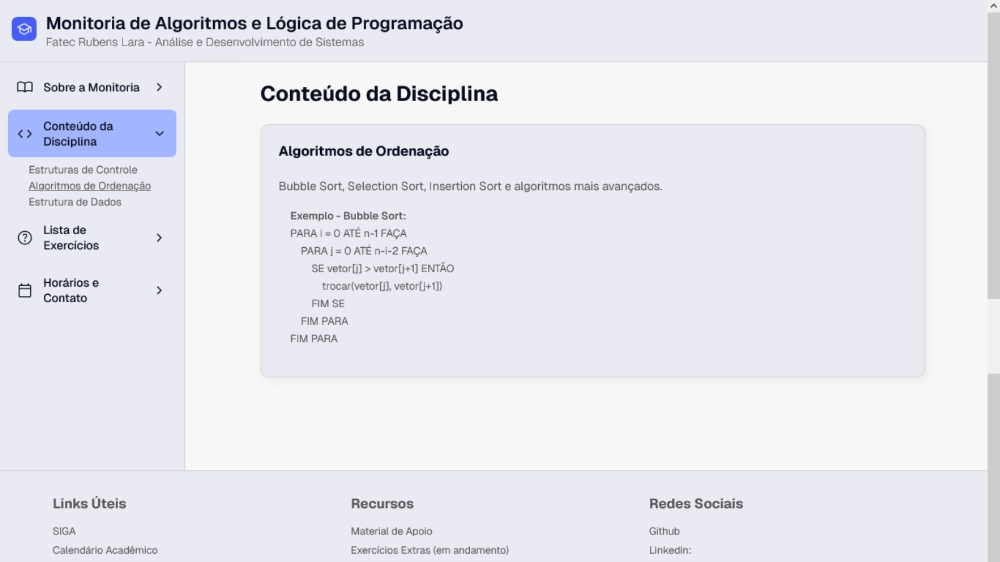
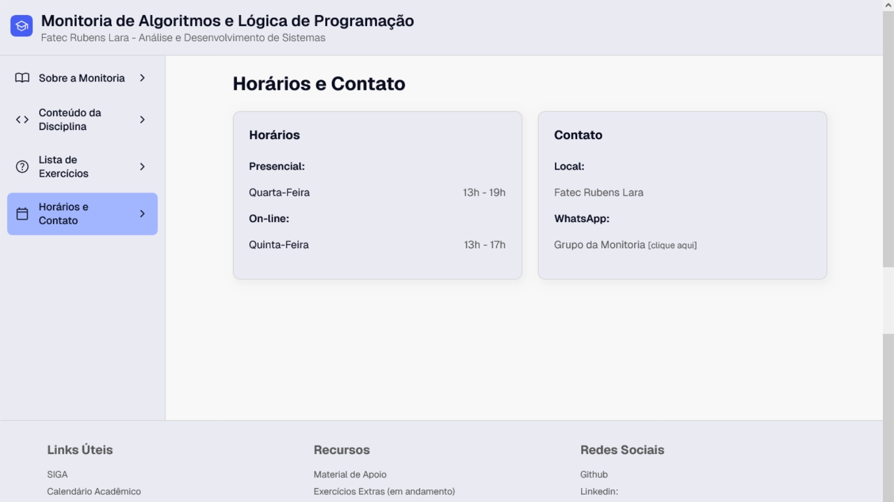
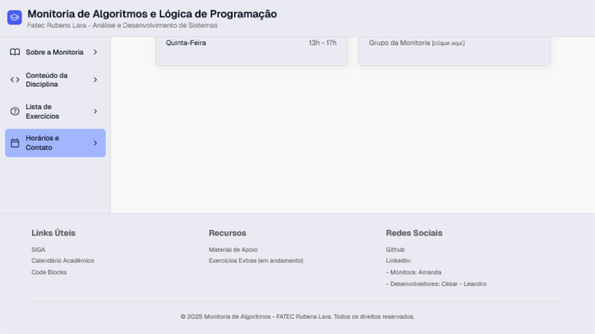
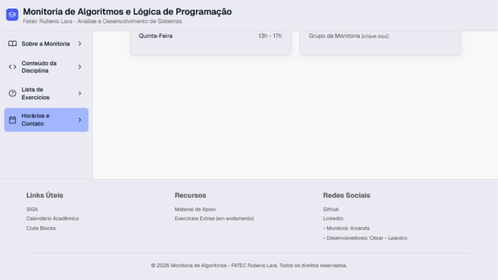

Site da Monitoria
O projeto Site da Monitoria está sendo desenvolvido em parceria com um amigo com o objetivo de criar um portal completo para auxiliar estudantes e monitores da disciplina de Algoritmos e Lógica de Programação. A proposta é centralizar conteúdos importantes em um único lugar, tornando o processo de estudo mais acessível, organizado e eficiente.
O site reúne o conteúdo da matéria, listas de exercícios, links úteis, informações sobre horários, locais e formas de contato da monitoria, buscando facilitar a vida de quem estuda e quem ensina. A estrutura foi projetada para facilitar a navegação e permitir que o usuário encontre rapidamente o que precisa, seja revisando um tópico específico ou consultando um material complementar.
No design, optamos por um visual moderno e focado no conteúdo, inspirado na organização clara e objetiva de sites de documentação. Por isso, o layout conta com um menu lateral à esquerda, onde o usuário pode navegar entre os tópicos, enquanto a área principal atualiza com o conteúdo selecionado.
O desenvolvimento está sendo feito utilizando HTML, CSS e JavaScript, com foco em boas práticas, organização e facilidade de manutenção. Esse projeto tem sido uma excelente oportunidade para aprofundar conhecimentos em desenvolvimento de interfaces, navegação dinâmica e estruturação de conteúdo, além de reforçar habilidades de colaboração e planejamento em projetos conjuntos.
 





 
